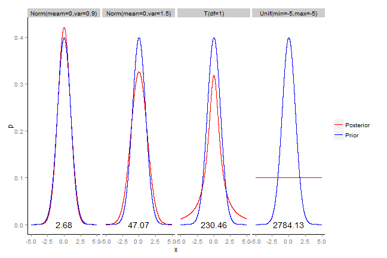
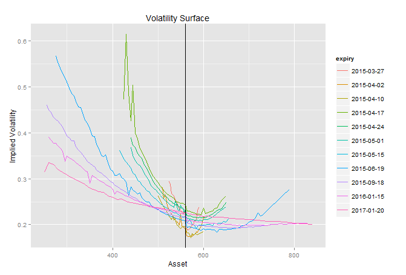
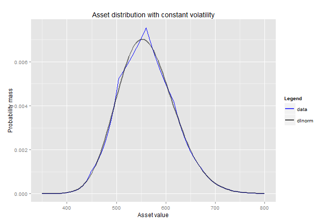

- Illiquid Equity option markets
- Only 2/3 quotes per week
- Banks must mark to market their books every day
- Based on what volatility surface?
Optimization in Finance
Maximum Entropy Distribution of an Asset Inferrred from Option Prices
Bertrand Le Nezet
Problem statement
Objective
- Use prior information and constraints to find posterior
- requires no interpolation / extroplation
- density with
Kullback-Leibler Relative entropy
- In Information Theory, Shannon defines the entropy as a measure of unpredictability of information content
- the KL relative entropy (or KL divergence) is a non-suymetric mesure of the difference between two probability distribution P and Q.
- \(D_{KL}(P\Vert Q)=\int_{-\infty}^{\infty}p(x)\ln\frac{p(x)}{q(x)}dx\)
- Properties:
- KL is equal to zero if P and Q are identical
- KL relative entropy is always positive
Principle of Minimum Cross Entropy (PMXE)
- In Bayesian statistics the KL divergence can be used as a measure of the information gain in moving from a prior distribution to a posterior distribution. If some new fact Y = y is discovered, it can be used to update the probability distribution for X from p(x | I) to a new posterior probability distribution p(x | y,I) using Bayes' theorem:
- Relative Entropy for various P
Examples of PMXE

Formulating the Optimization problem
We have one prior probability density function \(q(x)\)
We have \(m\) price constraints: \(\forall i=1,2,..m\; d_{i}=D(T)\mathbb{E}_{\mathbb{Q}}\left[c_{i}(X_{T})\right]\) where
- \(D(T)=e^{-(r-q)T}\) represents the discount factor
- \(c_{i}(X_{t})\) denotes the $i$th option pay-off function at expiry depenent only on the asset value at expiry
- $d_{i}$is the corresponding option price
- \(r\) risk-free rate for \(T\)
- \(q\) dividend yield
Formulating the Optimization problem (2)
Minimize \(S(p,q)=\int_{-\infty}^{\infty}p(x)\log\left[\frac{p(x)}{q(x)}\right]dx\)
Subject to 2 constraints:
- \(\int_{0}^{\infty}p(x)dx=1\)
- \(\forall i=1,2,..m\;\mathbb{E}\left[c_{i}(X)\right]=\int_{0}^{\infty}p(x)\; c_{i}(x)dx=ci\)
This is a standard constrained optimization problem which solved by using the method of Lagrange which transforms a problem in n variable and m constraints into an unconstrainted optimization with n+m variables.
Objective function
la lal al la
\(H(p)=-\int_{0}^{\infty}p(x)\log\left[\frac{p(x)}{q(x)}\right]dx+(1+\lambda_{0})\int_{0}^{\infty}p(x)dx+\sum_{i=1}^{m}\lambda_{i}\int_{0}^{\infty}p(x)\; c_{i}(x)dx\)
From standard calculus, we know that the minimum \(\lambda^{*}=(\lambda_{0}^{*},\ldots,\lambda_{M}^{*})\) is reached when:
- the gradient (vector of derivatives)\(\delta H\) is equal to zero: \(\delta H(\lambda^{*})=\int_{0}^{\infty}\left[-\log\left[\frac{p(x)}{q(x)}\right]+\lambda_{0}+\sum_{i=1}^{m}\lambda_{i}c_{i}(x)\right]\delta p(x)dx=0\) (necessary condition)
- the hessian (matrix of second derivatives) is positive definite (sufficient condition)
Objective function solution
This leads immediately to the following explicit representation of the MED:
\(p(x)=\frac{q(x)}{\mu}\exp\left(\sum_{i=1}^{m}\lambda_{i}c_{i}(x)\right)\), \(\mu=\int_{0}^{\infty}q(x)\exp\left(\sum_{i=1}^{m}\lambda_{i}c_{i}(x)\right)dx\)
Numerical implementation
Here are the steps:
- Market data snapping (Google Finance JSON API)
- Data cleaning (expiry date to time, mid calculation)
- Only take price for call with strike > spot and put with strike < spot (put call parity)
- Convert price to implied volatility to plot volatility smile
Option quotes

Volatility smile

Asset distribution for multiple expiry dates

Constant volatility
| strikePct | strikeAbs | price | impvol |
|---|---|---|---|
| 0.6 | 336 | 0.00 | 0.25 |
| 0.7 | 392 | 0.00 | 0.25 |
| 0.8 | 448 | 0.25 | 0.25 |
| 0.9 | 504 | 4.11 | 0.25 |
| 1.0 | 560 | 23.24 | 0.25 |
| 1.1 | 616 | 5.82 | 0.25 |
| 1.2 | 672 | 0.96 | 0.25 |
| 1.3 | 728 | 0.11 | 0.25 |
| 1.4 | 784 | 0.01 | 0.25 |
Maximum Entropy Distribution

Volatility smile
Conclusion
Read-And-Delete
- Edit YAML front matter
- Write using R Markdown
- Use an empty line followed by three dashes to separate slides!